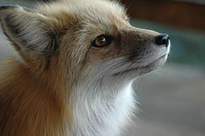

Lisica (Vulpini), jedno od dva glavna tribusa potporodice Caninae. Obuhvaca lisice u pravom smislu sa rodovima Vulpes i Urocyon. srednje velicine, koji imaju tijelo pokriveno te karakteristican gusti rep ili tzv. "cetku". Najpoznatija vrsta lisice je crvena lisica, raširena na cijelom kontinentu Europe. Prisutna je i u popularnoj kulturi i u folkloru, osobito kod ljudi koji obožavaju lisice, bez obzira na državnost, kulturnu grupu i pleme. Neke su vrste lisica, kao što je falklandska otocna lisica, poznata i kao warrah, izumrle.
| Lisica |
|---|
|  |